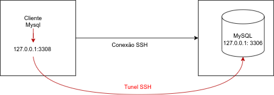
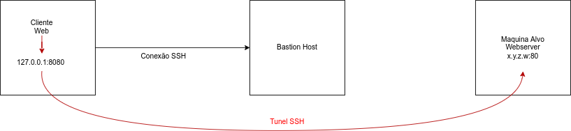
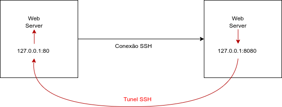
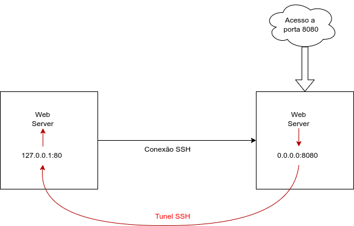

SSH - Port Forwarding
Introdução
O encaminhamento de porta (Port Forwarding) no SSH é uma técnica usada para redirecionar conexões de rede por meio de um túnel seguro. Este documento aborda os diferentes tipos de encaminhamento de porta via SSH.
Port Forward Local para Remoto
O encaminhamento local para remoto permite que uma máquina local (cliente) encaminhe conexões para um servidor remoto, que então direciona essa conexão para outro destino. Isso é útil, por exemplo, para acessar serviços protegidos atrás de firewalls ou restritos a redes internas.
Exemplo de Uso
Se você possui um serviço de banco de dados (BD) rodando em uma máquina na porta 3306, e o BD nessa máquina não é diretamente acessível, você pode usar um túnel SSH para acessar o serviço.
Consiste em criar uma porta local e redirecionar tudo que for para esta porta para a porta remota :

Sintaxe do Comando
ssh -L [porta_local]:[host_remoto]:[porta_remota] [usuario]@[servidor]
Parâmetros:
-L: Indica que é um túnel local.[porta_local]: Porta na máquina local onde o cliente escutará.[host_remoto]: Endereço do destino final ao qual o servidor remoto irá encaminhar a conexão.[porta_remota]: Porta no host remoto que será acessada.[usuario]@[servidor]: Credenciais e endereço do servidor SSH intermediário.
Exemplo Prático
Acessando o servidor de banco de dados que está configurado para aceitar conexões apenas de localhost:
ssh -L 3308:127.0.0.1:3306 usuario@db.example.net
Neste caso:
- A porta
3308será aberta na máquina local. - Qualquer solicitação para
localhost:3308será encaminhada via SSH paradb.example.net, e a solicitação será encaminhada para127.0.0.1:3306.
Teste de Acesso
No cliente MySQL, use o seguinte endereço localhost:3308 :
Exemplo:
telnet localhost 3308
Isso redirecionará automaticamente para o serviço na máquina onde o BD responde apenas localmente.
Port Forwarding local para máquina e porta remota
Muito útil quando se necessita passar por alguma restrição. Imaginemos o caso de uma maquina local sem acesso a uma rede restrita e que precisa acessar uma página em uma máquina nessa rede restrita. Você pode usar uma máquina intermediária com acesso a essa rede.
Exemplo de Uso
Se você possui um serviço web rodando em uma máquina na porta 80, mas essa máquina não é diretamente acessível, você pode usar um túnel SSH para acessar o serviço via uma máquina intermediária (bastion host).

Sintaxe do Comando
O mesmo que para port forward local para remoto, com a diferença do detalhe que especificaremos a maquina remota
Exemplo Prático
Acesse um servidor web protegido em 198.51.100.10 pela porta 80 através do servidor SSH intermediário bastion.example.net:
ssh -L 8080:198.51.100.10:80 usuario@bastion.example.net
Neste caso:
- A porta
8080será aberta na máquina local. - Qualquer solicitação para
localhost:8080será encaminhada via SSH para198.51.100.10:80.
Teste de Acesso
Abra um navegador e acesse:
http://localhost:8080
Isso redirecionará automaticamente para o serviço na máquina protegida.
Port Forward Remoto para Local
O encaminhamento remoto para local permite que conexões realizadas em um servidor remoto sejam redirecionadas para um cliente local. Isso é especialmente útil para acessar serviços locais de uma máquina remota que, de outra forma, não estariam acessíveis.
Exemplo de Uso
Imagine que você esteja em um ambiente remoto e precisa acessar um servidor web ou serviço rodando em sua máquina local (cliente SSH). Para isso, você cria um túnel para redirecionar as conexões.

Sintaxe do Comando
ssh -R [porta_remota]:[host_local]:[porta_local] [usuario]@[servidor]
Parâmetros:
-R: Indica que é um túnel remoto.[porta_remota]:Porta aberta no servidor remoto para escutar conexões[host_local]:Endereço do destino final no cliente local.[porta_local]:Porta no cliente local que será acessada.[usuario]@[servidor]: Credenciais e endereço do servidor SSH intermediário.
Exemplo Prático
Redirecionando conexões para sua máquina local através de um servidor remoto:
ssh -R 8080:127.0.0.1:80 usuario@servidor.example.net
Neste caso:
-
A porta 8080 será aberta no servidor remoto.
-
Qualquer solicitação feita ao servidor remoto na porta 8080 será redirecionada para localhost:80 na máquina local.
Teste de Acesso
No ambiente remoto, abra um navegador e acesse:
http://servidor\_remoto:8080
Isso redirecionará automaticamente para o serviço rodando em sua máquina local na porta 80.
Port Forward Remoto para Local usando Máquina Local como Bastion
Este cenário combina o uso de um túnel remoto com a máquina local agindo como bastion host. Ele é útil quando você deseja disponibilizar um serviço local para acesso externo por meio de um servidor intermediário.
Exemplo de Uso
Imagine que você tenha um servidor web local na porta 80 e deseja disponibilizá-lo para acesso remoto por meio de um servidor SSH intermediário, que responderá como um servidor web na porta 8080.

Sintaxe do Comando
ssh -R [porta_remota]:[host_local]:[porta_local] [usuario]@[servidor]
Configuração do /etc/ssh/sshd_config da máquina que receberá a conexão SSH e ficará exposta ao serviço para outros:
GatewayPorts yes
GatewayPorts clientspecified
Após a alteração, reinicie o serviço SSH para aplicar as mudanças:
sudo systemctl restart sshd
Exemplo Prático
ssh -R 9000:127.0.0.1:8080 usuario@servidor.example.net
Neste caso:
- A porta 9000 será aberta no servidor remoto.
- Qualquer solicitação feita ao servidor remoto na porta 8080 será redirecionada para
localhost:80na máquina local.
Teste de Acesso
No ambiente remoto, acesse:
http://servidor_remoto:8080
Isso conectará ao serviço local rodando em sua máquina na porta 8080.
Considerações de Segurança
- Certifique-se de que o encaminhamento remoto esteja habilitado no servidor SSH, verificando a diretiva "AllowTcpForwarding" no arquivo sshd_config.
- Use regras de firewall para limitar o acesso às portas abertas.
- Sempre prefira usar chaves SSH em vez de senhas para autenticação.
Conclusão
Os diferentes tipos de port forwarding oferecidos pelo SSH são ferramentas poderosas para acessar serviços de forma segura e eficiente, mesmo em ambientes protegidos ou restritos. Combine essas técnicas com boas práticas de segurança para garantir a integridade e confidencialidade dos dados.